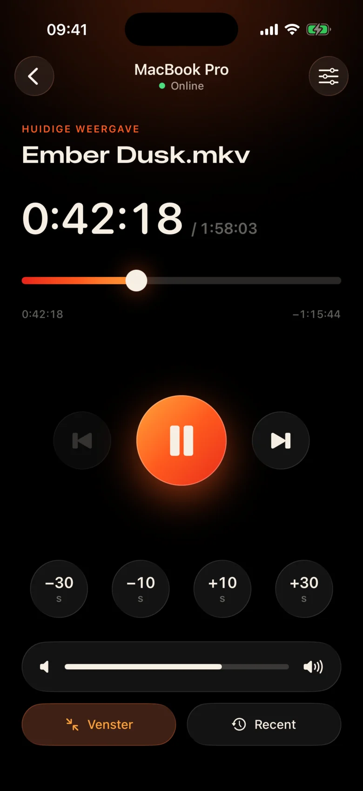
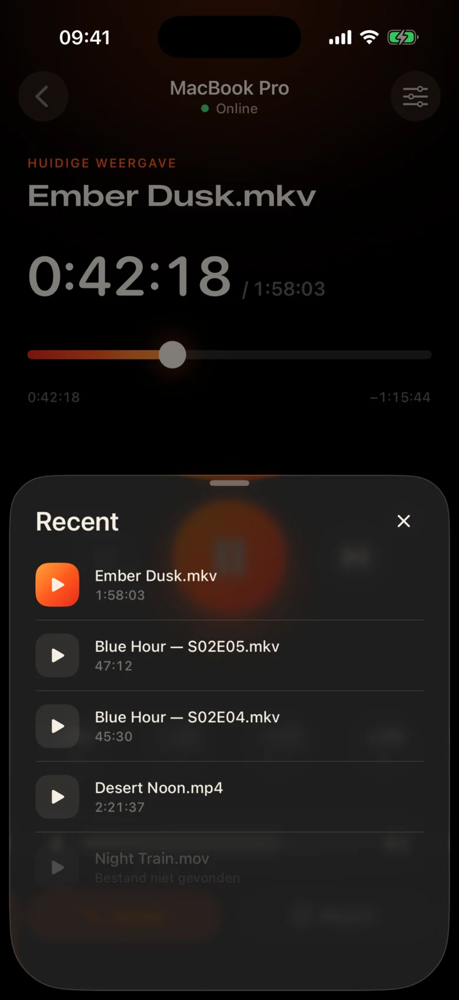
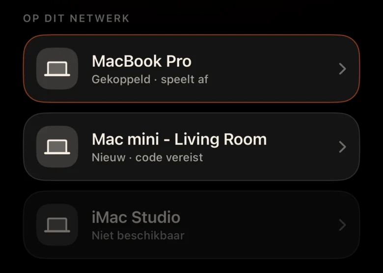
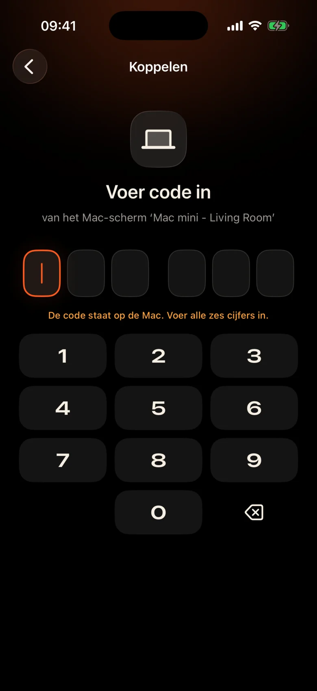

De Mac staat aan de andere kant van de kamer
Hij is via de muur op de projector aangesloten. Elke pauze betekent opstaan, het trackpad in het donker opzoeken en naar een kleine bedieningsbalk turen.
Kinrox: tik op pauze op de telefoon in uw hand.
Kinrox speelt elke video af op uw Mac — en verandert uw iPhone in zijn afstandsbediening. MacBook op de projector, jij op de bank: pauzeer, spring 10 seconden terug, zet het volume lager of start de volgende aflevering zonder de deken te verlaten.


Hij is via de muur op de projector aangesloten. Elke pauze betekent opstaan, het trackpad in het donker opzoeken en naar een kleine bedieningsbalk turen.
Kinrox: tik op pauze op de telefoon in uw hand.
Gefluister in de ene scène, explosies in de volgende - en in de volgende kamer slaapt er al iemand.
Kinrox: een volumeschuifregelaar direct onder je duim.
Webpanelen met IP-adressen en wachtwoorden, een browsertabblad dat in slaap valt, knoppen gemaakt voor een bureau – niet voor een bank.
Kinrox: vindt uw Mac zelf, koppelt met één code.

Grote doelen, een donker, warm thema en een lichte tik van haptiek onder elke druk op de knop. Je kunt het gebruiken zonder van de film af te kijken.
Elke knop is groot genoeg om ook half slapend te raken.
Een regel gemist? Eén tik terug. Sla de intro over met twee.
Het eigen volume van de Kinrox, van 0 tot 100. Het systeemvolume van de Mac blijft onaangeroerd.
Vorig en volgend bestand uit dezelfde map, in Finder-volgorde.
Kies iets dat je eerder hebt bekeken: het wordt geopend op de Mac.
Sleep de tijdlijn naar elk gewenst moment en schakel vanaf de bank naar volledig scherm.
Geen IP-adressen, geen wachtwoorden, geen account. Na de eerste code maakt uw iPhone vanzelf opnieuw verbinding.
Sleep een bestand naar Kinrox of druk op ⌘ O. De externe server is standaard ingeschakeld.
Kinrox verschijnt vanzelf als beide apparaten verbinding hebben met hetzelfde wifi-netwerk.

De Mac toont een code die twee minuten actief is. Drie verkeerde pogingen en het is weg.


Alex’s iPhone wil Kinrox bedienen. Voer deze code in op je telefoon.
 Code verloopt over 1:47
Code verloopt over 1:47
De video is de interface. Er verschijnt een dun laagje glas wanneer je het nodig hebt en verbergt zich na drie seconden.

Gebouwd op de libmpv, de motor achter de mpv en IINA. Kies voor ingebouwde of externe audio en ondertitels. VideoToolbox verzorgt de hardwaredecodering.
Kinrox plaatst de video's in de map en start de volgende wanneer een aflevering eindigt - "2" vóór "10", zoals Finder.
Toetsenbord ⏯-toetsen, Control Center en Now Playing-bediening Kinrox. Er wachten maximaal 20 recente bestanden op het startscherm.
Uw Mac en iPhone wisselen afspeelopdrachten rechtstreeks uit via uw lokale netwerk. Je video's blijven op de Mac.
Ontdekking via Bonjour, verbindingen alleen vanuit uw eigen subnet. Openbare adressen en mobiele adressen worden geweigerd.
Elk commando reist in een gecodeerd kanaal. Het koppelen van tokens bevindt zich op beide apparaten in de sleutelhanger.
X25519HKDF-SHA256ChaCha20-Poly1305Geen accounts of gebruiksanalyses. De Mac controleert dagelijks een openbare updatefeed zonder unieke identificatiegegevens of systeemprofilering. Deze website heeft geen analyses of cookies.
De afstandsbediening ziet titels en duur, nooit bestandspaden. Het openen van een recent bestand is opgelost op de Mac.
Kinrox is geschreven in Swift 6 en SwiftUI bovenop libmpv. Elke lijn van de speler, de afstandsbediening en het protocol staat op GitHub.
Bouwen vanuit de bron# Xcode 26.5, XcodeGen and mpv from Homebrew
brew install xcodegen mpv pkg-config
git clone https://github.com/awaik/Kinrox.git
cd Kinrox
cp -n Config/Signing.local.xcconfig.example \
Config/Signing.local.xcconfig
# Set your team: docs/runbooks/RUNBOOK-BUILD-AND-SIGNING.md
./Scripts/check-env.sh
./Scripts/generate.sh
xcodebuild -workspace Kinrox.xcworkspace \
-scheme PlayerMac -configuration Debug \
-destination 'platform=macOS,arch=arm64' \
-derivedDataPath DerivedData build
open DerivedData/Build/Products/Debug/Kinrox.appAfspelen en afstandsbediening werken zonder internettoegang wanneer de Mac en iPhone een Wi-Fi-netwerk delen. De Mac gebruikt HTTPS voor dagelijkse updatecontroles en downloadt een update wanneer u ervoor kiest deze te installeren.
Ja. De Kinrox speelt af op alles wat uw Mac laat zien: een projector, een tv via HDMI of een scherm dat is aangesloten op de AirPlay.
Macs met Apple silicon op macOS 14 Sonoma of hoger, en iPhones op iOS 17 of hoger. Intel Macs worden nog niet ondersteund.
Ja. Elke iPhone koppelt één keer met zijn eigen code; Er kunnen maximaal vier afstandsbedieningen tegelijkertijd worden aangesloten. Je kunt ze allemaal intrekken in de spelerinstellingen.
Ja. Gebruik op de Mac de knop Audio en ondertitels of de menu's Audio en ondertitels. Kies ingesloten nummers, zoek externe bestanden in geneste mappen of schakel ondertitels uit. Kinrox kan uw keuze onthouden voor de volgende aflevering.
Niets. Kinrox is gratis en open source onder de GNU GPL v3.
Kinrox voor Mac en iPhone. Gratis, open source en gemaakt voor filmavonden.